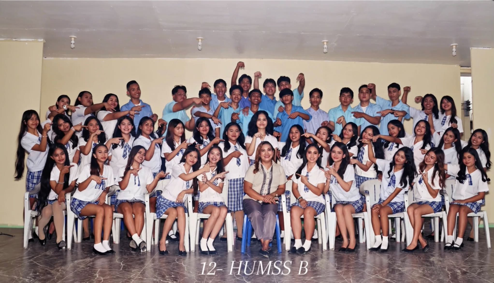
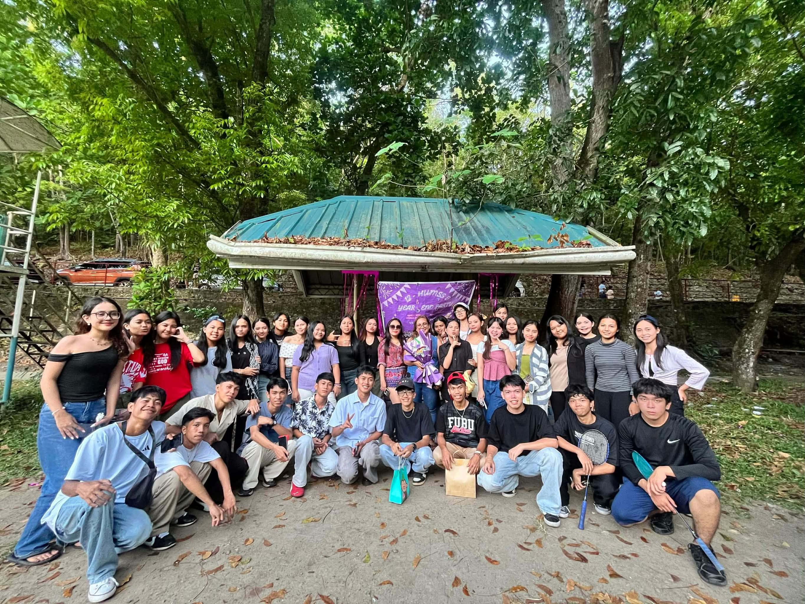
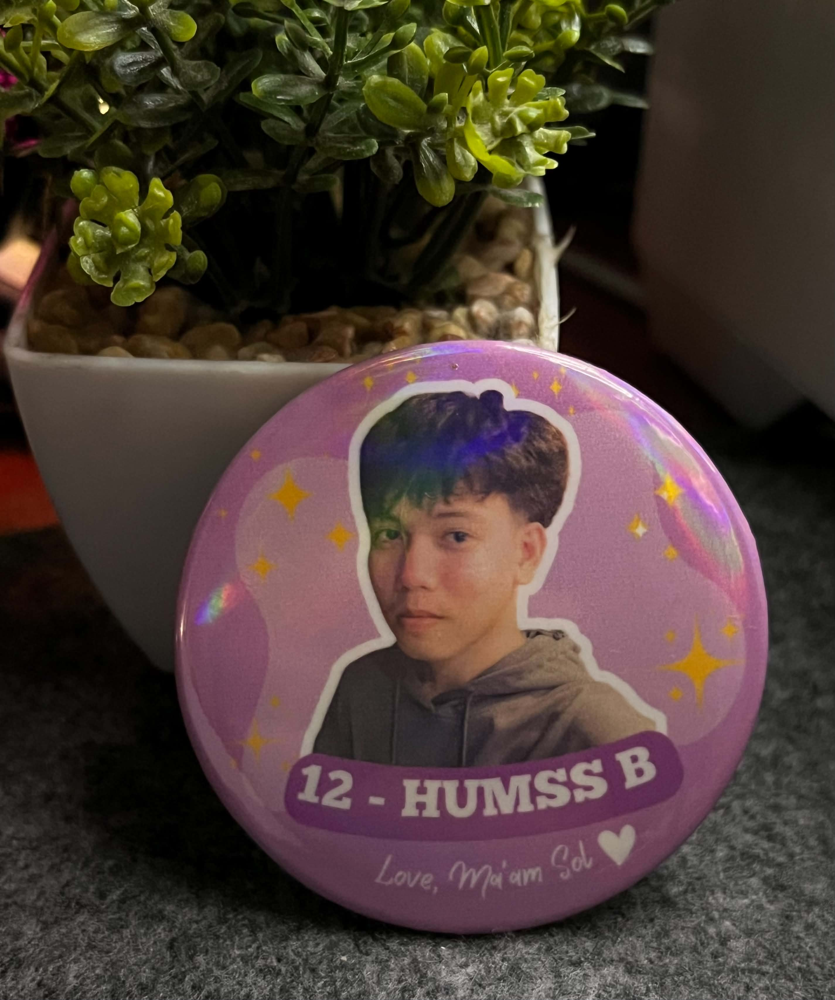

“A journey of friendship, growth, and unforgettable moments.”

Our two years as HUMSS B were filled with laughter, friendship, challenges, and unforgettable memories. We may have started as classmates, but along the way, we became a family who supported and helped one another through different experiences. We are also thankful to our teachers, Madam Sol and Ms. Gen, for guiding us, teaching us, and being part of our journey. Their patience, lessons, and encouragement made our time together even more meaningful. This picture is more than just a class photo. It represents the memories, friendships, and moments that we will carry with us even after we leave HUMSS B. No matter where life takes us, we will always remember the two wonderful years we shared together.


My senior high school days were filled with happiness, challenges, laughter, and unforgettable memories. During this time, I met people who became part of my journey and made my school life more meaningful.
There were days when we felt tired because of school activities, projects, and deadlines. Even so, we still found ways to enjoy our time together and create beautiful memories.
These pictures remind me of the fun moments, friendships, achievements, and experiences that made my senior high school journey special. Every picture tells a story that I will always remember.
Madam Sol gave me a gift that I will always treasure. It may look simple, but it carries the kindness and care she showed us in class. Every time I look at it, I will remember her patience, lessons, and encouragement. I am thankful to her for making our two years in HUMSS B so meaningful. I will keep this gift forever as a reminder of my senior high school journey.
Different memories, one unforgettable journey.